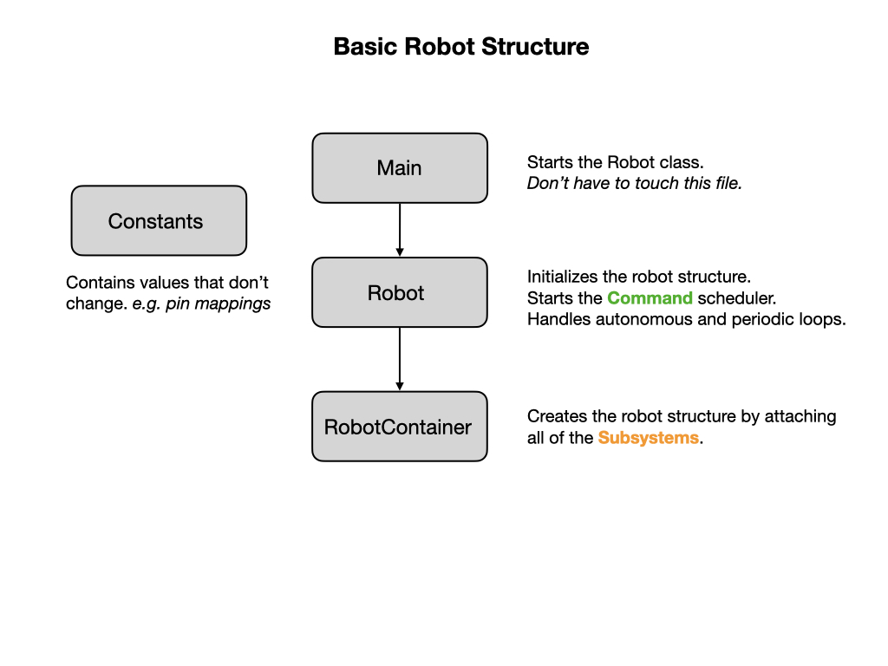
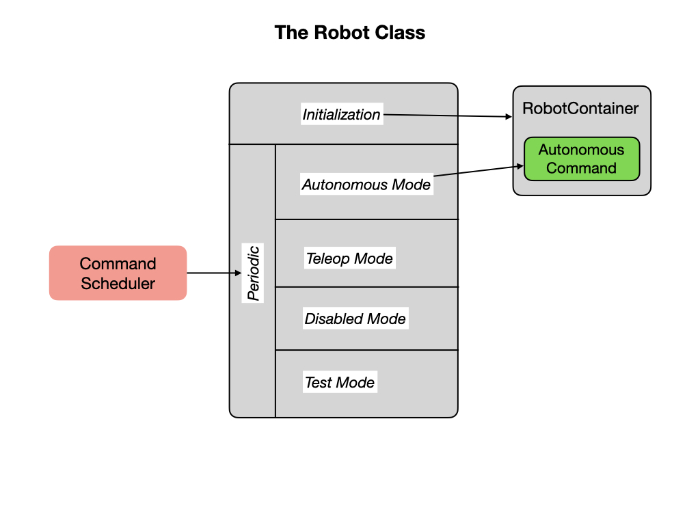
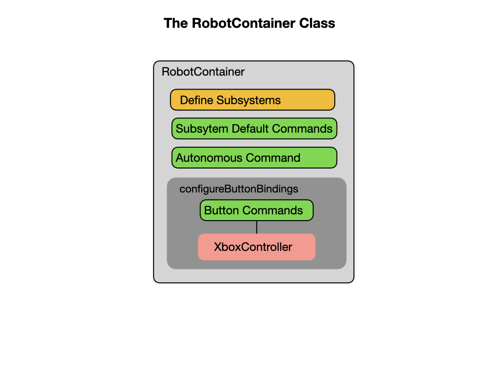
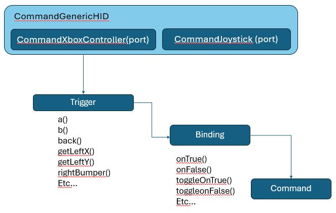

Basic Robot Structure
Programs based on the WPILib library are organized around two fundamental concepts: Subsystems and Commands. Subsystems and Commands run within the context of an FRC Robot program that is built using four basic components. Each component is kept in separate java files called Main.java, Robot.java, RobotContainer.java, and Constants.java.
The Main Class
The Main.java file is the starting point for the entire program and calls the Robot class to start building the robot. To learn more about the Main class refer to the W3 Schools tutorial. In our code you should never need to change this file.
Robot Class
The Robot.java file defines the Robot class and its purpose is to maintain the overall state of the robot. It is implemented as a State Machine that represents the state of the robot at various points in time. We touched on State Machines in Programming Basics but we’ll learn a lot more about them later.
During a competition a robot will first Initialize and then go into Autonomous mode (state) for the first 15 seconds. In this mode it will run Autonomous Commands which tell it what to do during this time period. We’ll be looking at Autonomous Commands in a later turorial. After 15 seconds, the robot will switch into Teleoperated mode. During this time the driver will operate the robot using a joystick controller. At the end of the competition the robot will go into Disabled mode. During each of these modes a Command Scheduler will run that is responsible for running commands.
RobotContainer Class
The RobotContainer.java file is where the main structure of the robot is built. It defines Subsystems and their Default Commands. It sets up Autonomous Commands that are run during the Autonomous mode of the competition. The RobotContainer is also where mappings between the Joystick and various Commands are defined. In our ProgTrain1 example project this class will also define Shuffleboard options that allow you to control what happens during the Autonomous mode of the competition. We’ll learn a lot more about Shuffleboard later.
The Constants File
The Constants.java file provides a central location for defining constants. Constants are values assigned to variables that do not change throughout the execution of the program.
Our team uses the Constants file toefine a constant for what robot we are running our code on. Take a look at this block of code:
private static RobotType robotType = RobotType.CAMERABOT;
This Robot Type is tied to an enumeration (enum) a little farther down that defines the allowable values:
public enum RobotType {
SIMBOT,
DEVBOT,
CAMERABOT,
COMPBOT,
}
As you can imagine we have lots of different robots, and we do not want to have a seperate set of Java code for each of them. So they all share the same code. But they may have different parts or capabilities such as motor port numbers, or different game-spec elements (i.e. Comprobot has a shooter, the CameraRobot does not). By having a RobotType defined we can test in our code what robot we are working with and adjust the code as needed.
Important
You are responsible for setting this value and setting up your code to run on ALL of our robots.
Notice that there are four keywords before the constant variables. So let’s learn what they mean:
The private keyword makes the variable accessible only within the declared class. If you want to make them accessible by all classes, your going to have to change the keyword to public.
The static keyword creates attributes that can be accessed without creating an object of a class. In the Constants file we’re not going to create any objects so we need to define the variables as static.
The final keyword in Java means that the variable doesn’t change it’s value during the execution of the program.
The double is a variable data type that can store large fractional numbers.
Note
Take a look at the function inside the Constants file. You are never supposed to put functional code inside the Constants file, so what gives? In this case the function will abort if you have a SIMBOT defined and your are trying to deploy it to a physical robot. In effect it is a safety measure.
Joystick Controllers
A joystick/gamepad can be connected to your laptop via a USB port or Bluetooth. The WPI Library provides all of the necessary software to interface with XBox, PS3/4, or Logitech game controllers. Detailed information on Joysticks can be found in the FRC Documentation.
Our team uses Command Programming which means we want to fire off a command when a button or trigger is pressed. To do this we want to ensure that we bind our button presses to triggers that fire off commands. For more information on binding tiggers to commands see command based bindings.
The Controller object is created in the RobotContainer class.
To use the Xbox controller use this initialization:
private final XboxController driver = new XboxController(0);
Note
You pass the port number to the XboxController, so in this example port 0 is for the Driver Controller. Port 1 would most likely be the operator controller.
We create a drivetrain object to instantiate the drive subsystem and give us a reference to it.
if(!Utils.isSimulation()){
drivetrain = new Drive(new DriveKraken());
} else {
drivetrain = new Drive(new DriveSim());
}
Note
The Utils class tests for the robot running in simulation. If not simulation fire up the drive object with a Kraken class otherwise use the simulator class. More on this configuration later.
A default command is created in the class that uses the joystick to control the robot:
drivetrain.setDefaultCommand
(drivetrain.run(() -> {
drivetrain.teleopDrive(
Math.abs(river.getLeftY()) >= 0.0 ? -driver.getLeftY() :0,
Math.abs(river.getLeftX()) >= 0.0 ? -driver.getLeftX() :0,
Math.abs(river.getRightX()) >= 0.015 ? -driver.getRightX() : 0);
}
)
));
References
FRC Documentation - Structuring a Command-Based Robot Project
FRC Documentation - Joysticks
Java Tutorial on W3Schools